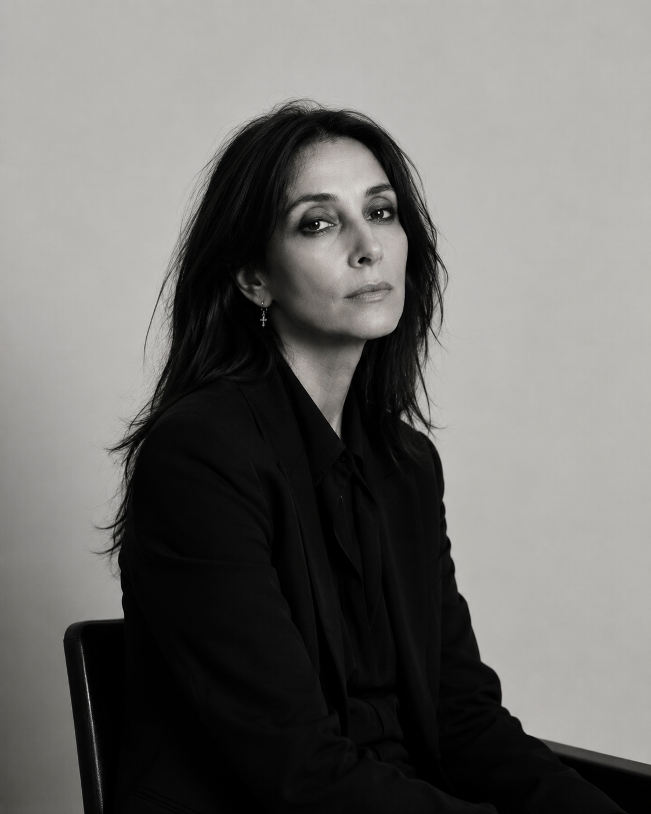

Gigi Sozzani serves as Editor in Chief of UOMO Modello, and an editor at the Male Model Index, guiding the publication's editorial vision while overseeing its mission to preserve the history of professional male modeling through thoughtful journalism, historical research, and visual storytelling.
Working closely with Founder and Creative Director Maxime Oliver, Sozzani helps shape the publication's editorial standards, ensuring every feature balances historical accuracy with refined visual presentation. Her approach emphasizes quality over quantity, allowing each profile to stand as a lasting record of the industry's most influential careers.
Her editorial philosophy reflects a belief that fashion is both culture and history. Under her leadership, UOMO Modello continues to document legendary models, photographers, agencies, magazines, and campaigns that helped define generations of international menswear.
By combining careful research with contemporary editorial design, Sozzani has helped establish UOMO Modello as a publication devoted not simply to fashion, but to preserving the legacy of an industry whose visual history deserves permanent recognition.
"Great editorial work doesn't simply document fashion—it preserves the people and ideas that shaped it."Visit UOMO Modello